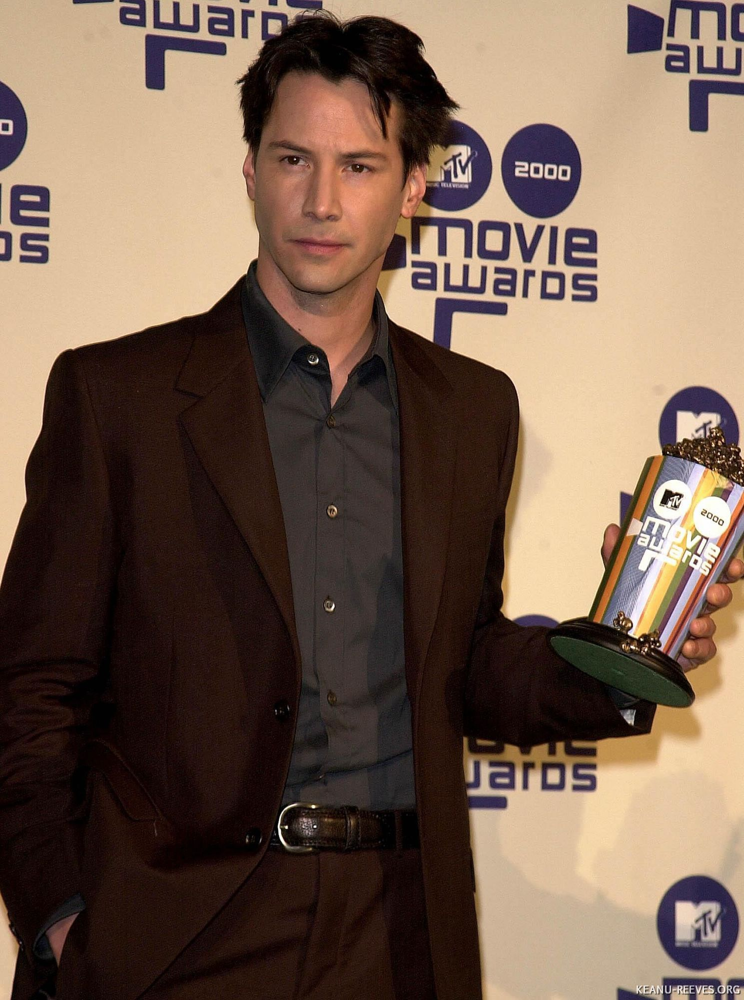
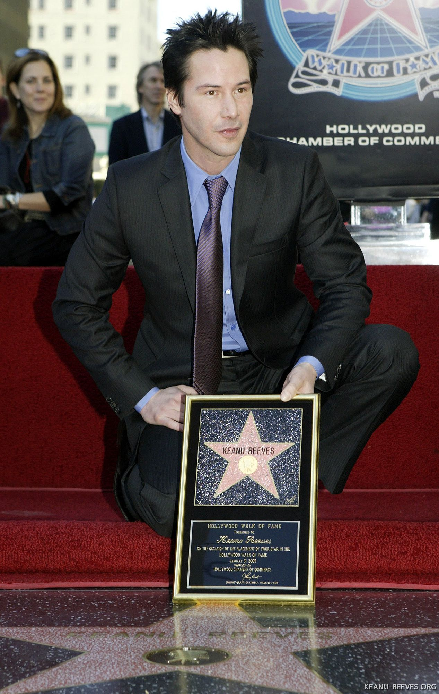
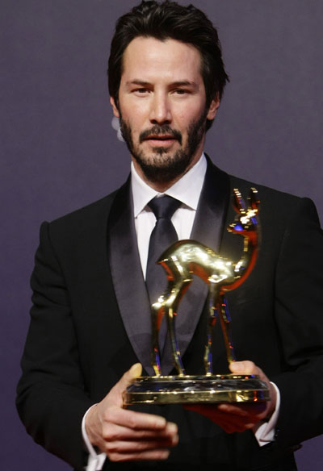

He has won several awards such as MTV Movie Awards, Bambi Award for Best International Actor, and received a star on the Hollywood Walk of Fame (2005). In 2024 he received the inaugural Lance Reddick Legacy Award at the Saturn Awards, recognising both talent and character in the industry.

Box-office / Influence:
His films (especially major franchises) have grossed well and he’s considered a significant box-office draw.

Philanthropy & Generosity:
He has donated millions to cancer research (inspired by his sister’s leukemia battle) and children’s hospitals. He has been especially generous to crew and behind-the-scenes workers (for example sharing profits from The Matrix).

Cultural Impact:
His characters (Neo, John Wick) and persona have resonated globally; he’s often cited as among the most admired actors for his professional conduct and kindness.